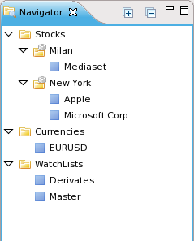

The navigator view provides a list of all available securities. From here you can open charts and news headers specific to each security, and drag a security to populate other views.

Right-click on any security in the view to open a pop-up menu that allows you to perform operations such as open the historical chart or view the news headers.